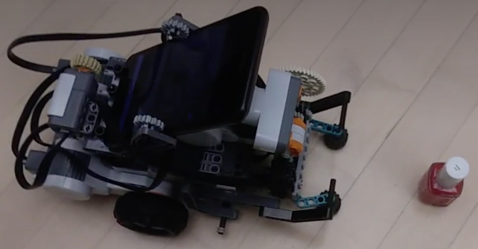
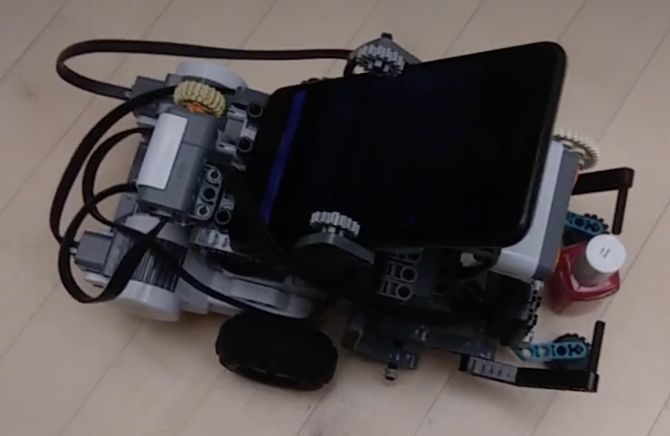
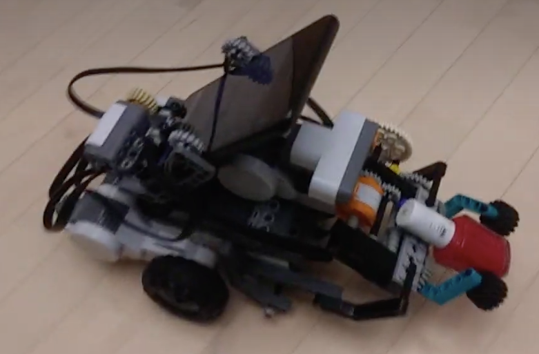
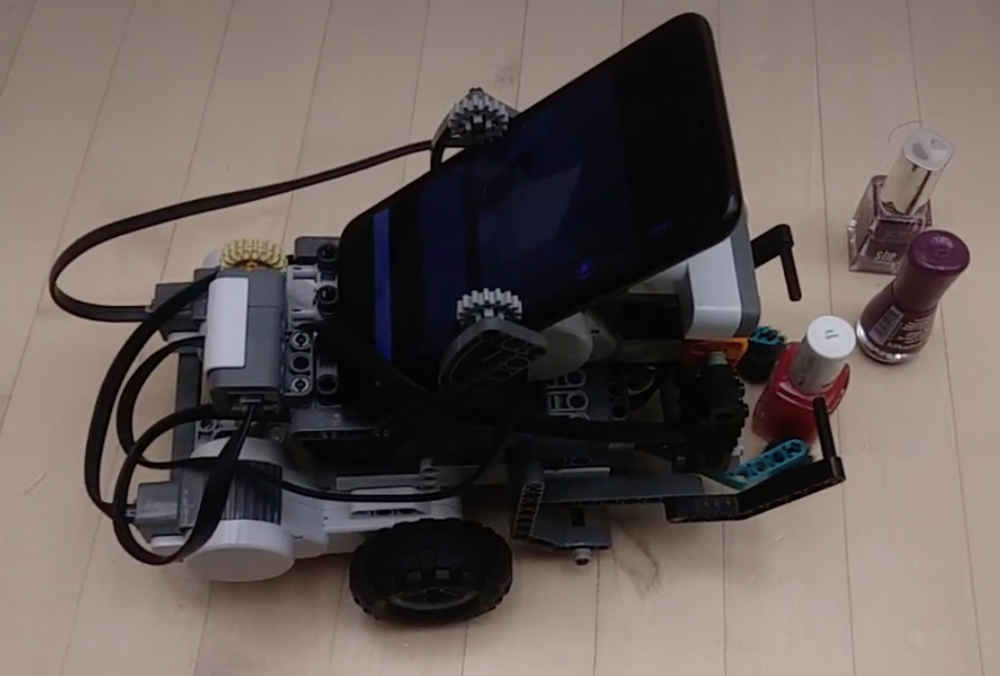

State of AI at the dawn of 2021
A critical review
Authors: Patrick Hammer, Tony Lofthouse
Published: January 3, 2021
As of January 3, 2021, there are no commonly available personal AI assistants which can both remember and reason about arbitrary information in different contexts. Also, despite all the progress in machine learning there are no commonly used autonomous agents which can generalise across domains without a human-in-the-loop to maintain the dataset and retrain the model between rollouts.
If the goal of AI is to create an optimised function to solve a problem in a specific domain, then we are making good progress. Optimization, in particular backpropagation with deep neural networks (DL), has proven to be better than handcrafting for many specific problems which were considered to be hard [1] [6] [11]. This turned out to be true for computer vision, language translation, speech recognition, board games, computer games, and many more. This has led to the rapid global adoption of this approach.
What all of these problems have in common is that no learning is required after model deployment. However, learning at runtime is an ability which gives intelligent animals a key survival advantage. What has made machine learning so successful is a narrower idea of learning. That is, solving an offline optimization problem which in nature is carried out by evolution and not by the intelligence of individuals. Example: find a genetic code such that the firefly will not only detect, with high accuracy, the types of prey necessary for its survival, but also catch it successfully. Here, the firefly itself does not need to learn at runtime. The same is true for autonomous cars which are expected to be able to drive right away, with pre-wired components for navigation, localization, object detection etc. Some of these components are programmed and others have model parameters resulting from offline-optimization.
The key challenge AI has not yet convincingly completed is to move from offline optimization towards learning quickly and reliably at run time. This is not only intelligence’s primary role in nature but is also the original goal of AI. AGI, like an animal in the wild, is supposed to be able to deal, at runtime, with unforeseen circumstances. An ability to adapt quickly and reliably will not only push forward the next generation of robotic explorers and personal assistants, but can also be seen as a key aspect of intelligence. Intelligence is a term with many meanings.
In volume 10 (2019) of the Journal of Artificial General Intelligence (JAGI) the article [7], “On Defining Artificial Intelligence” by Dr. Pei Wang, was published. This JAGI article is considered to be one of the strongest attempts, since the beginning of the field, to address the long-standing lack of consensus on how to define the field and topic of Artificial Intelligence (AI). The review process invited 110 leading AI experts, including researchers from DeepMind and Google Brain [8]. The core of the article is centered around the author's definition of intelligence itself: “The essence of intelligence is the principle of adapting to the environment while working with insufficient knowledge and resources”. While his definition has been the most agreed-upon in the related AGISI survey (with 567 participants), some responses expressed disagreements about the resource constraint and necessity to adapt in real time. Some of these disagreements stem from the difference between artificial and biological systems, the latter of which evolved to adapt under knowledge and resource insufficiency [10], while many AI systems are not equipped with an ability to adapt after deployment.
Several misconceptions about the nature of intelligence come about by leaving learning at runtime out of the picture. For instance, genetic algorithms (GA, [5]) are sometimes sold as an alternative to reinforcement learning (RL, [12]). With the previous considerations taken into account, it is clear that GA is to RL, as evolution is to intelligence. They are fundamentally different with an overlap only occurring when learning happens in a multi generation simulation, instantiated over an arbitrary number of generations. This instantiation property is not the case for an autonomous robot, or animal for that matter, both of which are expected to be able to adapt to unforeseen circumstances as quickly as possible and within a single lifetime. Clearly, they cannot continue learning once any fatal action is taken. These aspects are a large part of the reason why the great successes in domains with perfect simulation availability (such as [11]) have not translated into successes in real-world domains. For this, offline optimization will always be limiting compared to a system capable of adapting in real time.
From a machine learning perspective, this poses several challenges:
- The agent needs to be able to deal with dynamic (non-stationary!) environments.
- A proper decision theory has to be found, which for animals was achieved by evolution. This one cannot be learned during a single agent’s lifetime. It needs to be innate, while exhibited behavior will be a combination of nature and nurture.
One decision theory which has had a lot of success is reinforcement learning (RL, [12]). Whilst it struggles with non-stationary environments (learning rate decay cannot be used if the agent should continue to be able to adapt!) it can at least be used for real-time learning. It has some major conceptual limitations though, let’s look at the most common form of RL, Behaviorism-based RL. It is about learning a state-action response mapping (a policy) with the highest expected rewards, without any modeling of other causal relationships encountered in the environment. Such an agent has a reward-centric world view. This means that when the utility function (which generates the rewards) changes, the agent has to relearn a proper policy. Its knowledge won’t transfer to a new task, by design. Whilst a changing utility function is not an issue in computer games with a single success criteria (lap time in racing games, checkmate in chess, etc.), for biological systems, it’s an everyday reality. A hungry animal behaves fundamentally differently from a thirsty one. One will search for prey or delicious leaves, and the other one for sources of water. In this case the behavior is not only dependent on external factors, but also internal needs. Causal knowledge, picked up when certain needs are pursued, automatically transfers to later when other needs will be active. This makes such an agent react instantly to changing needs, by design. The solution is the decoupling of beliefs from goals. This allows the agent to learn the consequences of its actions in different contexts (causal modeling), which is agnostic to which consequences are currently in need of achievement. This approach is pursued by many in the AGI field which pursues AI’s original goal, yet is not commonly pursued in the AI subfields whose focus lies in successes in single domains.
This brings us to the next issue: measurement. Measuring is key to determine progress, but what we measure matters. If we measure agent performance for each domain separately, and allow hyperparameters to be changed between domains, we will obtain special-purpose scores for different agents. This is useful from an application perspective but will tell us nothing about the generality of a single agent. If on the other hand hyperparameter changes aren’t allowed between domains, the measures will reveal scores across the domains the agent was tried on. This can be summarized into a single general-purpose score. Currently, what you’ll find is that the agent with the best general-purpose score often cannot compete with special-purpose agents (the ones whose hyperparameters were allowed to be adjusted for a single intended domain). Agents with the best special-purpose scores will not reach a high general-purpose score. Nature faced similar tradeoffs (as we see in Fig. 1), generality makes adaptation across exceptional environmental conditions easier, though for a specific stationary environment, a special solution is often preferred.
Fig. 1: Specialization vs. Generality (Photo credit: Luc Viatour and Getty Images)
These observations have several implications:
- Measuring progress towards AGI demands a change in the way success is evaluated.
- AGI will not be a superset of AI. Where score in a single domain is concerned, a special-purpose agent will tend to be the best solution, but it will be worse in adapting to other domains.
- Special-purpose capability will often, though not always, be irrelevant for AGI progress.
We wrote this article with the goal of informing the reader about the many challenges and misconceptions which are holding back general purpose AI. Striving for short-term application-centered outcomes should not stand in the way of the bigger picture. We need to think deeply and remove the roadblocks in the way of building systems that can understand what they perceive and adapt to changing circumstances in real time.
Designing systems with these capabilities is hard, and we are still at the very beginning of this frontier. Systems such as Non-Axiomatic Reasoning System [9] proposed by Dr. Pei Wang, which can adapt and model aspects of its environment from perceptions, carry out behaviours and satisfy its goals through reasoning. The NARS project has been underway for over 30 years and the progress in the critical areas of learning at runtime, reasoning and goal satisfaction have been significant. Our most recent success is in combining a Deep Neural Network (YOLOv4 [1] [6]), for visual perception, with NARS’ real-time learning & reasoning abilities (via 'OpenNARS for Applications’ [4] [13]) in a robotic bottle collect mission (see Fig. 2).




Fig. 2: A bottle collect mission via NARS-based real-time reasoning and learning
Play video: [Bottle collect mission] [Grab&Lift update]
This example requires the robot to collect a bottle by finding and picking it up, while learning to explore whilst avoiding objects in its way. This captures the strengths of what was usually captured separately by reinforcement learning (namely an ability to learn at runtime [12]) and practical reasoning (flexibility through goal planning and background knowledge utilization [2]). The example makes use of state-of-the-art deep learning models for object detection, a task that DL is unquestionably good at. Combining the strengths of existing machine learning for offline-optimization and intelligent systems, like NARS for learning and reasoning at runtime, is one way to make AGI systems like ours a reality with the technology available right now.
Our AGI is expected to profoundly benefit the autonomy of intelligent agents, including:
- Rescue robots
- Robotic explorers
- Personal Assistants on smartphones and PC’s
The possibilities for deploying AGI are bounded only by our imagination, whether it is for new types of autonomous agents or as yet unthought of applications.
In conclusion, learning at runtime is a critical capability for an AGI. Nevertheless, Offline-optimized AI solutions can be a great tool to be utilized by a system, such as the NARS general-purpose reasoner. A solution which follows this pattern can learn from rich multi-modal input at runtime, and is able to generalise across domains. Such a system is able to adapt quickly to changing circumstances and is intelligent in the true sense of the word.
The key takeaways from this article are:
- AGI has a different goal than narrow AI - Generality vs Specificity
- Measuring progress in AI and AGI requires different metrics
- Adaption at runtime is a necessary requirement of intelligent systems
- General Purpose Reasoners like NARS are one way forward for truly intelligent systems
Here’s to an exciting year ahead as we move slowly but gradually into the age of AGI.
If you are also passionate about the future of AGI then get involved in the debate and let us know what you think.
References
[1] Bochkovskiy, A., Wang, C. Y., & Liao, H. Y. M. (2020). YOLOv4: Optimal Speed and Accuracy of Object Detection. arXiv preprint arXiv:2004.10934.
[2] Bratman, M. E. (1987). Intention, Plans, and Practical Reason. CSLI Publications. ISBN 1-57586-192-5.
[3] Georgeff, M., Pell, B., Pollack, M., Tambe, M., & Wooldridge, M. (1998, July). The belief-desire-intention model of agency. In International workshop on agent theories, architectures, and languages (pp. 1-10). Springer, Berlin, Heidelberg.
[4] Hammer, P., & Lofthouse, T. (2020, September). ‘OpenNARS for Applications’: Architecture and Control. In International Conference on Artificial General Intelligence (pp. 193-204). Springer, Cham.
[5] Holland, J. H. (1984). Genetic algorithms and adaptation. In Adaptive Control of Ill-Defined Systems (pp. 317-333). Springer, Boston, MA.
[6] Redmon, J., Divvala, S., Girshick, R., & Farhadi, A. (2016). You only look once: Unified, real-time object detection. In Proceedings of the IEEE conference on computer vision and pattern recognition (pp. 779-788).
[7] Wang, P. (2019). On Defining Artificial Intelligence. Journal of Artificial General Intelligence, 10(2), 1-37.
[8] Monett, D., Lewis, C. W., & Thórisson, K. R. (2020). Introduction to the JAGI Special Issue “On Defining Artificial Intelligence”—Commentaries and Author’s Response. Journal of Artificial General Intelligence, 11(2), 1-100.
[9] Wang, P. (2013). Non-axiomatic logic: A model of intelligent reasoning. World Scientific.
[10] Wang, P. (2009, October). Insufficient Knowledge and Resources-A Biological Constraint and Its Functional Implications. In AAAI Fall Symposium: Biologically Inspired Cognitive Architectures.
[11] Schrittwieser, J., Antonoglou, I., Hubert, T., Simonyan, K., Sifre, L., Schmitt, S., ... & Lillicrap, T. (2020). Mastering atari, go, chess and shogi by planning with a learned model. Nature, 588(7839), 604-609.
[12] Sutton, R. S., & Barto, A. G. (2018). Reinforcement learning: An introduction. MIT press.
[13] OpenNARS for Applications (ONA), last accessed January 3, 2021
[Back]